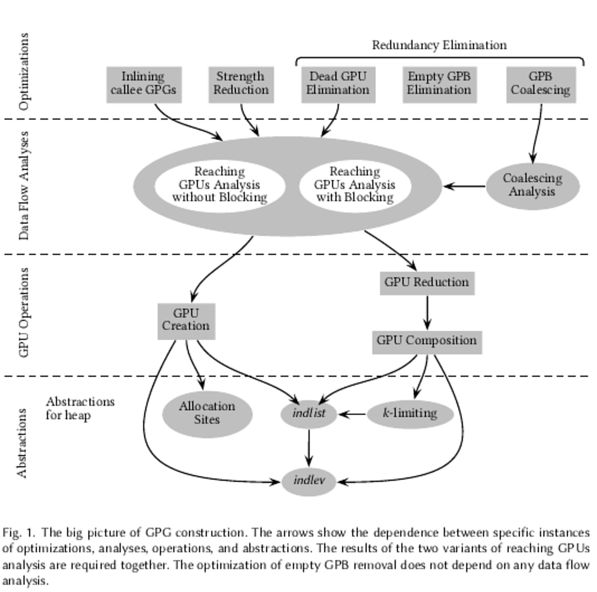

My Ph.D. Work
- Topic
Generalized Points-to Graphs: A New Abstraction of Memory in Presence of Pointers- What is that?
A new form of bottom-up procedure summaries, called the generalized points-to graphs (GPGs) for a precise and scalable flow- and context-sensitive points-to analysis.- More details
GPGs can represent both memory transformers that summarize the effect of a procedure and the resulting memory in terms of points-to relations. A GPG contains GPUs (generalized points-to updates) representing individual memory updates along with the control flow between them.
A GPG views points-to relations as memory updates and generalizes them using the counts of indirection levels leaving the unknown pointees implicit. GPGs are compact; their compactness is achieved by a careful choice of a suitable representation and a series of optimizations: strength reduction reduces the indirection levels, redundancy elimination removes redundant memory updates and minimizes control flow (without over-approximating data dependence between memory updates), and call inlining enhances the opportunities of these optimizations.
We devise novel operations such as GPU composition and GPU reduction and data flow analyses such as reaching GPUs analysis and coalescing analysis for these optimizations. These optimizations are similar to the optimizations performed by compilers.
Essentially, these optimizations eliminate the data dependence between memory updates by rewriting the memory updates thereby discarding redundant control flow whenever possible. The picture below describes the various abstractions, operations, analyses, and optimizations used along with their dependences between each other.
